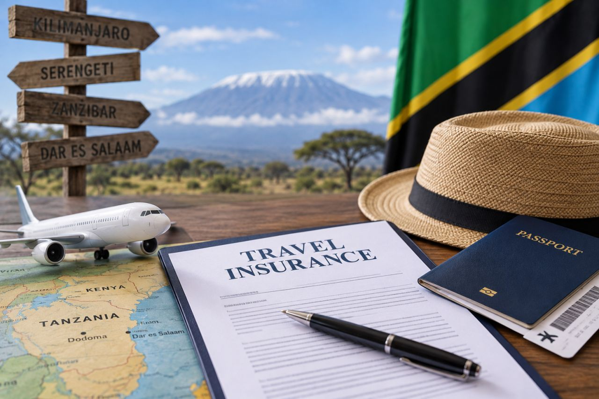

Photograph: Onyango George / EA Hospitality Pulse
Tanzania's US$44 gate opens on Thursday. The cost is not the premium, it is the questions nobody has answered.
From 1 October every foreign visitor entering mainland Tanzania must hold a state-issued travel policy or be refused entry. The premium is small. What will cost East African operators money is the ambiguity around combined itineraries, the exemption and verification at the border, and the three days they have left to fix it.
On Thursday last week, the man whose job is to sell Tanzania to British tour operators began his note to them with an apology. Tim Henshall, head of tourism marketing in the UK for the Tanzania Tourist Board, was writing to members of the African Travel and Tourism Association about a rule that would soon require every foreign visitor to buy a government travel policy at the border. "I can only apologise, as I am trying my very best to get confirmed information from various departments including MNRT (Ministry of Natural Resources & Tourism); TTB (Tanzania Tourist Board) and the Ministry of Finance, but currently I can get no definitive answers," he wrote on 24 September. On the start date, he offered only this: "To be confirmed, but I sense it is imminent."
He was right. Two days later the Tanzania Association of Tour Operators published a Ministry of Finance public notice fixing the date as 1 October 2026. That is this Thursday. From then, a foreigner arriving at Kilimanjaro, Julius Nyerere, Namanga or any other mainland port of entry without an inbound travel policy from the National Insurance Corporation, known as NIC, can be turned back. The premium is US$44. The warning on the start date, for an industry that sells most of its product a year or more ahead, was five days.
The money is not the story; US$44 is a rounding error on a Serengeti itinerary. The story is what the rule leaves unsaid, and who ends up paying for the gaps: in staff time, in guest complaints at the arrivals hall, and in the quiet erosion of margin on packages that were priced and contracted long before anyone knew the date.
The instrument is Government Notice No. 256 of 2026, the Insurance (Inbound Travel Insurance) Regulations, published on 4 September under a power inserted into the Insurance Act by the Finance Act 2025. The clearest reading of it so far comes from lawyers at Clyde & Co in Dar es Salaam, whose note of 16 September sets out the mechanics. Regulation 4 requires every foreigner entering Mainland Tanzania by land, sea or air to hold a valid policy, bought before travel or at the point of entry. Regulation 4(4) is the one operators will remember: a foreigner without cover "shall be denied entry into Mainland Tanzania".
The policy runs for up to 92 days from arrival and covers multiple entries in that window. The premium is fixed at the equivalent of US$44, about TZS 116,000, payable in shillings through the insurer's own system, and it is non-refundable except as the policy allows. Cover must include emergency medical treatment, medical evacuation, repatriation and lost luggage, but the limits are left to the policy document rather than the regulation. NIC is the designated insurer, alone or with registered partners. Henshall's note adds the point that will irritate travellers most: the requirement applies "regardless of whether they have their own travel insurance already".
Clyde & Co flagged, a fortnight ago, the gap that the weekend notice has now closed. "Although the Regulations do not specify a commencement or enforcement date," the firm's partner Tenda Msinjili and associates Naomi Kammu and Barbara Mawalla wrote, "inbound travel insurance is now framed as a mandatory entry requirement." The date has arrived. Most of the other gaps have not closed.
None of this is a surprise in principle. The charge was announced in the June 2025 budget, and within days tour operators in Arusha were, as The EastAfrican reported on 20 June 2025, pleading with the government to shelve it for a year so that trips already sold would not be hit by a charge nobody had priced. In one sense they got more than a year: fifteen months passed between the Finance Act and Thursday. In the sense that mattered, they got nothing, because for most of that time there was no date, no seller and no process against which a contract could be written.
Zanzibar introduced its own US$44 inbound policy, sold by the Zanzibar Insurance Corporation, known as ZIC, from October 2024, despite complaints from investors on the island at a meeting convened by their association that they had not been consulted. The feared collapse did not follow. By January 2025 The Citizen was reporting that arrivals had kept rising since the charge began, reaching a monthly record of 92,000 in December 2024. That is the strongest evidence available that a flat premium of this size does not move demand on its own. It is also why the argument for owners now is not about volume. It is about friction and about who carries the cost of confusion. Three questions matter, and all of them fall due on Thursday.
The first is the combined itinerary, which is the core product of the Tanzanian safari trade. Henshall's note was blunt: the mainland policy is "completely separate to the Zanzibar insurance". The Ministry of Finance notice, as TATO published it, routes the purchase by point of entry: NIC for arrivals on the mainland, ZIC for arrivals through Zanzibar. It then adds that where an emergency occurs anywhere in the United Republic, the visitor is served by whichever insurer sold the policy. Read one way, that implies a single policy covers the whole country, bought wherever the guest lands. Read the other way, it simply allocates claims. What it does not say is whether a guest who lands at Kilimanjaro, spends a week in the Serengeti and flies on to Unguja must also buy Zanzibar's policy on arrival there. Ubon Safari's Umang Gossain, in a guidance note republished by ATC News on 25 September, put the operator's problem plainly: "There are specific arrangements depending on whether you enter Mainland Tanzania or Zanzibar first, so it is important to understand which insurance applies to your itinerary." If the answer is two policies, the bush-and-beach guest pays US$88 a head for what is, in the traveller's mind, one country.
The second is the exemption. The regulation, as Clyde & Co quotes its definitions, excludes from "foreigner" the residents of East African Community and Southern African Development Community partner states. Much of the press coverage, and Henshall's own note, says citizens. A British consultant or a Dutch engineer living in Nairobi is a resident of an EAC partner state but not a citizen of one. For the lodges and beach hotels that sell long weekends to Nairobi's and Kampala's expatriate market, the difference between those two readings is the difference between a free border and a US$44 surcharge on every guest in the car. Operator guidance circulating this week lists further exemptions, including work and residence permit holders, members of the Tanzanian diaspora, diplomats and transit passengers. We could not trace all of those to the regulation text, and immigration officers on Thursday morning will be working from whatever list they have been given.
The third is verification. Regulation 7 obliges the insurer to integrate its systems "with the respective travel authorities". Nobody outside government has yet shown how that works at Namanga or Holili, where Kenyan-based operators move guests across by road, or what happens to a coach party when the verification link is down. A guest who can buy at the point of entry is not refused, but a coach held while forty passengers buy on their phones is simply late.
Tanzania's own figures show where the cost lands. The Tourism Sector Survey, as TATO summarised it on Saturday, recorded 2,294,495 international arrivals in 2025, up 6.7 per cent, and earnings of US$4.41bn. Some 75.2 per cent of those earnings came from package tours. In practice, that means the policy will mostly be explained, and often bought, by a ground handler or destination management company on the guest's behalf. Where 2027 contracts were signed with an all-inclusive price and no clause for new government charges, the handler absorbs it. A family of two adults and two teenagers, using the child discount operators are quoting, adds US$132 on the mainland alone, and possibly double that if Zanzibar follows.
That is small against a safari, but not against a handler's margin on a fixed-price group, and it lands in the arrivals hall after a long-haul flight, when patience is thinnest.
The contrast with Nairobi is instructive. On 30 July Kenya's Health Cabinet Secretary, Aden Duale, published Gazette Notice No. 11492 requiring short-stay visitors to hold travel health cover worth at least US$50,000. On 24 August Justice Francis Rayola Olel suspended it. The petitioners' lawyer argued that the directive was "ostensibly ultra vires", because a health ministry was purporting to instruct immigration on a matter the statute reserves to the Interior ministry. The suspension was due for hearing on 16 September; we have found no published account of that sitting, and on the evidence available the notice remains unenforced.
Tanzania built its version differently: an amendment to the Insurance Act through a Finance Act, then regulations under it, with a state insurer as the vendor and a fixed price. That is harder to challenge and easier to enforce. For East African operators the pattern is worth naming. The arrival gate is becoming a place where governments collect, and the model that has survived is the one that runs through a finance law rather than a ministerial notice. Expect it to be copied, not repealed.
TATO has chosen to make the rollout work rather than fight it. "The success of the implementation will therefore depend not only on the availability of the insurance product but also on effective communication throughout the tourism value chain," its notice reads. In other words, for the first weeks the explaining will be done by the private sector.
City hotels in Dar es Salaam and Arusha should treat this first as a corporate-travel issue. Every foreign business guest now pays US$44 per 92-day window. Tell corporate accounts and meeting organisers this week, and point frequent travellers to the multiple-entry validity so that they buy once per quarter rather than once per trip.
Bush lodges and camps, and the Kenyan operators who feed them by road, should write to every guest arriving from 1 October, naming the insurer for their port of entry and the official purchase channel, and warn against lookalike sites. Get a written answer from your ground handler on the Zanzibar question before a guest meets it at the gate, and put a government-charges clause into every 2027 contract still open.
Beach hotels in Zanzibar, which have lived with their own scheme for two years, are the best placed to advise and the most exposed to the double-charge risk. They should decide now whether to absorb a second US$44 for bush-and-beach guests as a gesture, and say so in their sales copy before a competitor does.
The indicators to watch are specific. On Thursday: whether NIC's portal and the verification link at Kilimanjaro, Julius Nyerere and Namanga hold up under the first morning's traffic. Within weeks: whether the Ministry of Finance or the Tanzania Insurance Regulatory Authority publishes a ruling on mainland and Zanzibar policies for the same trip, and on residents versus citizens. And in Nairobi: the next date in the Duale notice case, because if Kenya redrafts its rule through a finance law, as Dar es Salaam did, the region will have three insurance gates rather than two.
📣 Telegram 💬 WhatsApp 💼 LinkedIn 📚 All guides